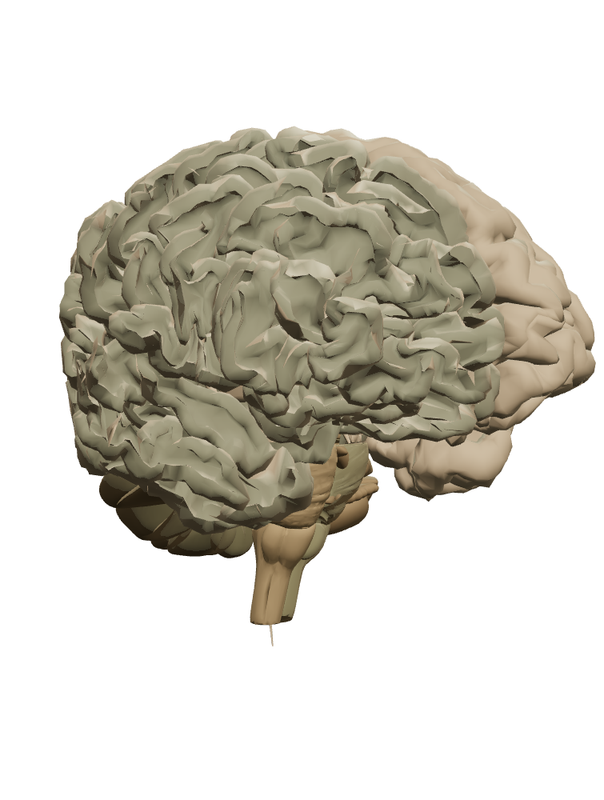

ANATOMIA HUMANA
MODELO 3DPreparando o modelo anatômico…

O 3D não está disponível neste navegador. Use os pontos abaixo para continuar.
EM EXPLORAÇÃOSistema nervoso humanoZ-Anatomy / BodyParts3D
Arraste para girar
1Pele→2Medula→3Músculo
Aguardando a mensagem
01Neurônio de origem02Neurônio receptor
Sinapse química · representação esquemática, sem escala
FAÇA SUA PREVISÃO PARA REVELAR
Simulação didática · sem medições de atividade cerebral
ESCOLHA UMA RESPOSTA0 acertos